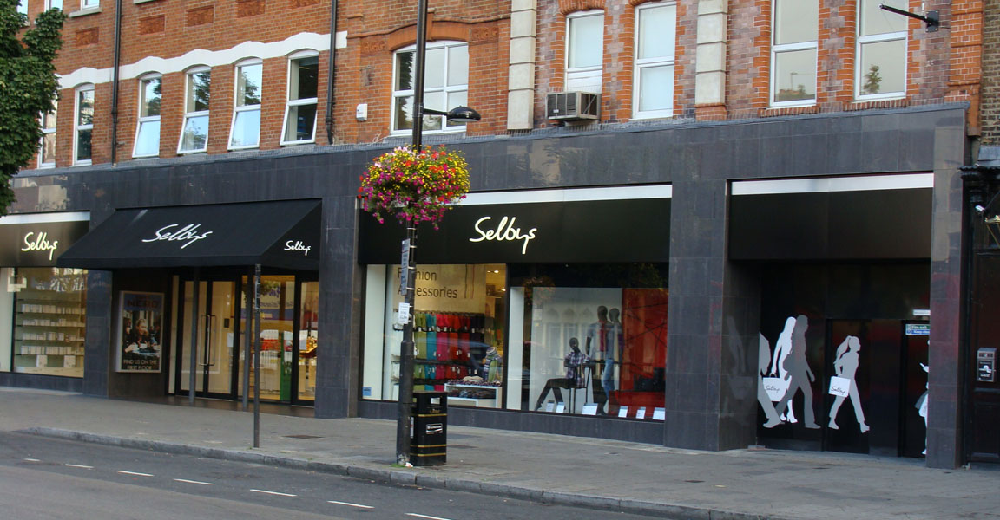
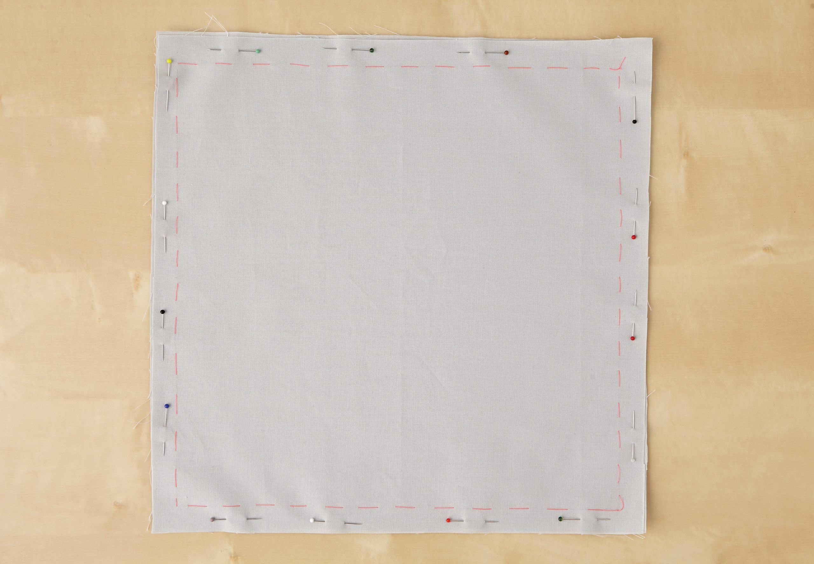

Image description: Green plants in a shabby interior, credit: Maria Orlova. From pexels.com website.
Combining creativity with a love for the environment, on a small budget
Why I love upcycling and DIY
Since early spring 2020, along with many other people across the world, I have had to spend much more time in my home than I have done ever before. All those DIY jobs and little fixes in my small, rented flat I was meaning to do, suddenly came into prominent view. I also realised that it is important to make your surroundings more pleasant to look at given the amount of time we spend in them.
I tend to live sustainably as possible: financially, ethically and maintaining good mental health which for me is through creative activities. When I need something, I generally try to find it second-hand or recycled. If I must buy new, I try to buy the best quality I can afford so that it lasts and if I no longer need it or get fed up with it, I can pass it on to someone else to reuse. Alongside that, paid work became more precarious, I had more time on my hands but all the places I would go to unleash my creativity had closed. So, I had to do something about it.
Before this past year, I had tried various upcycling techniques and tricks, so I put those into practice and learnt some new skills this past year. All the odds and ends I was meaning to recycle or give away were taking up space, so I had plenty of material to work with. Though if you don't, I have listed below where you can find things.
As I live in a small flat and do not have any heavy-duty tools, many of my projects have involved recycling and repurposing fabric and making small-scale home furnishings. Although I had previously joined a local group that lends tools and hopefully when the venture reopens, I should be able to borrow tools for further projects. Here on the Home Upcycled page, I have collated some handy information for getting started on upcycling, where to find materials and inspiration.
Image description: armchair and cushion. From pexels.com website.
Your starting point could come from a need. For example, instead of leaning on the cold wall behind my bed, I wanted a headboard so I can sit up more comfortably to read a book.
Or your project idea could come from materials you have sitting around and not using - I had an uncomfortable memory foam mattress that was still in good condition as it was barely used but was not comfortable enough to sleep on. I had initially intended to give it away to a charity but as many places were not accepting donations, I decided to make some floor cushions from it as well as using some of it for the bed headboard.
Inspiration can come from other people’s creations, for example, from home furnishing, interior design or travel websites and magazines. This could also prompt you to want to learn a technique such as sewing, which in turn might generate more creative ideas.
My own personal inspiration comes from all three sources and more. Though it is also influenced by the limitations of space in my home, being a renter and the current lack of access to any heavy-duty tools.
Where to find materials

Image description: Selby's department store window display. From www.james-selby.co.uk website.
You may well have all you need at home so do have a look through your wardrobe for clothes you do not wear or your linen cupboard. For example, I have made a bolster cushion cover from a blouse I already had and a bedsheet I no longer used. Otherwise, you will need to look for materials, for the main part of your upcycling project as well as for cutting and fixing things together.
Charity shops are a good place to browse, though mostly they have been closed during the lockdown. My favourite places are charity shops close to where I live in Islington for example:
Alternatives to charity shops, particularly when they are closed, are websites such as freecycle or in the UK, particularly in my area, freegle (opens in new window) or preloved (opens in new window) - both are good sources for second-hand materials.
Handy tip: if you have lived in various rented flats over the years you pick up odds and ends that do not match. It is nice to bring them together with a colour theme. Depending on the material, you can use latex, low-volatile compound paint, chalk paint, or milk paint, or fabric dyes such as Dylon. Paints can also be found through freegle – I have donated extra unused paint through my local group before and often find other people donating or requesting paint. Fabric dye can also be found through freegle but you might have to purchase it. You can also make your own natural dyes from avocado stones, onion skins etc, but then you will have to fix the colour. I have done this in the past: it can get messy, and the results can be unpredictable.
In addition to the main material, you will need things that help you put the project piece together. So, for sewing projects, you will need at least sewing needles and thread, and perhaps a sewing machine if you are feeling bolder and have the space to store a machine. These items can be bought from fabric shops and department stores, such as Selby's on Holloway Road, Islington. They also sell "no-sew" (opens in new window) alternatives to sewing.
It is also handy to have items such as multi-purpose glue and I have personally found "mouldable" glues such as Sugru and Fixits invaluable for joining pieces and for small DIY projects.
For slightly more heavy-duty projects, you may need a few small tools such as a hammer, screwdriver and pliers which can be bought from hardware shops such as my nearest Upper Street Hardware. I am still waiting for my local "Library of Things" to open after lockdown from where I am planning to borrow a saw and a planer to make a small box from an old shelf I found and perhaps remake it as a box-shelf.
How to construct

Image description: A farbic square with sewing guide marked on.From gathered.how website.
It is good to have some skills such as being able to sew and use a sewing machine though you can also get by without. Sewing tape, good all-purpose glue can work well and are relatively easy to find in DIY or haberdashery shops. See materials section.
There are a lot of websites where you can learn techniques online, working through some easy projects. For example:
Otherwise, as smaller businesses start to reopen, you could look for in-person beginner’s classes. I attended one workshop some years ago to build some confidence in using a sewing machine – I did not even own a sewing machine at the time. Since then I have made sew many different kinds of things 😊.
Where to find inspiration
If you are still feeling uninspired and are not sure where to start, browsing through interiors and furnishings Instagram accounts and websites, can give you some ideas of the kind of environment you want to create and the kinds of things you might want to make.
Some of the interior’s websites I likely spend too much time on include:
Perhaps you are now ready to get started on an upcycling project. Below are websites with projects I have been inspired to try. I want to make the wooden bowl lampshade some time, but I do not have a wooden bowl and currently do have materials to make a different type of lampshade so I will have to look out for wooden bowls and try it another time.
Image description: Image of upcycling project. Credit: see individual website. (Links open in new window)
Click on the image on the left to link to the project instructions.
Project names and their links to follow in just a moment...
Are there websites you are inspired by? Add them below.
Your favourite links added:
One of my favourite websites is www.stoffstil.co.uk (opens in new window) because there are beautiful photos of so many fairly easy projects along with free patterns you can download. They also sell materials in case you need to supplement what you have at home.
Reduce Waste
Reducing what you waste is a great way to reduce your impact on the environment.
From thinking differently about what you buy, to using re-usable items, to and composting at home - there are lots of ways to make a real difference.
Easy steps to reduce waste include thinking before you shop and buying better.
Craft can alleviate the symptoms of anxiety, depression, loneliness and even dementia, according to research.
Craft courses have been prescribed to patients since the dawn of occupational therapy in the late 19th century, with basketry used to relieve anxiety and physical ailments in soldiers during the first world war.
London mental health clinic creates human-centric interior design
Conversations around mental health have evolved significantly in recent years...
Design studio Covet & Noir unveil a new interior design for The Soke, a London-based mental health clinic providing family services. The project aims at creating a refined interior to ensure emotional as well as physical comfort.
This webpage is a tribute to a couple of my hobbies – crafting and upcycling. I have always loved making and learning new things, and I enjoy inspiring others to do so as well. Sharing my interests through working on this webpage, and learning HTML, CSS and JavaScript in the process has been frustrating at times but a lot of fun too.
I came across The Founders and Coders programme earlier this year. I feel like I have learnt so much already through the programme and I would like to continue my learning experience with the group.
One of the reasons I am applying is because I am looking to expand my skills and ideally have access to more employment opportunities as it has been a struggle to find work lately. I am hoping to find this through the Founders and Coders programme and ideally the prospective apprenticeship scheme.
Another reason for my interest is I am attracted by the learning environment of the programme which I have found to be rooted in supportive encouragement and inclusivity. The kind of combined learning system Founders and Coders has created is novel to me but has been great not just for the learning but also for boosting my confidence in the skills I have acquired.
I have in the past learnt and used some programming (visual basic for Excel) for practical problem-solving and have really enjoyed the process. It is something I acquired through online help and technical forums. After my more formal education at university, my learning has mostly been self-directed, finding online courses and help through using support forums from Stack Exchange and Microsoft. I have picked up some technical skills in this way, particularly relating to research and data analysis which has been my main area of work. Though the collaborative environment of the programme has lifted my understanding of coding so much further than just solitary learning, and I know I can develop so much more.
On the programme so far, I have learnt from other coachees as well as the mentors and coaches during the workshops and meetups. I have found it an interesting practice and a great learning opportunity to help others with their coding challenges and approach to coding. The process has also helped to clarify my own approach to solving problems.
I am truly grateful to my fellow coachees and mentors that have contributed to my learning so far. I would like the opportunity to continue to develop with fellow enthusiastic and motivated learners as well as being able to share my own experience and approach.